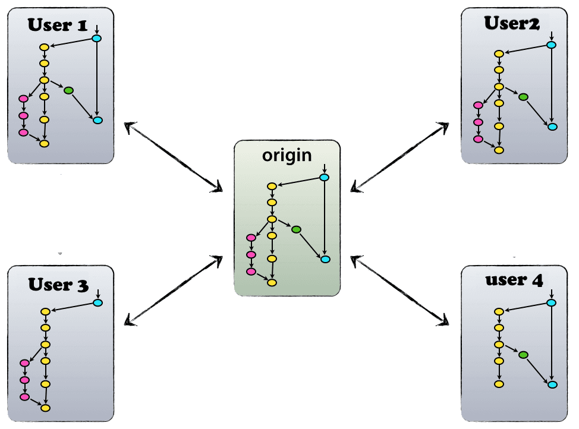

Introducing GitFlow
what is git flow
GitFlow is a branching model for Git, created by Vincent Driessen. it is very well suited to collaboration and scaling the development team.
Key Benefits
Parallel Development
One of the great things about GitFlow is that it makes parallel development very easy,by isolating new development from finished work. New development (such as features and non-emergency bug fixes) is done in feature branches, and is only merged back into main body of code when the developer(s) is happy that the code is ready for release. Although interruptions are a BadThing(tm), if you are asked to switch from one task to another, all you need to do is commit your changes and then create a new feature branch for your new task. When that task is done, just checkout your original feature branch and you can continue where you left off.
Collaboration
Feature branches also make it easier for two or more developers to collaborate on the same feature, because each feature branch is a sandbox where the only changes are the changes necessary to get the new feature working. That makes it very easy to see and follow what each collaborator is doing.
Release Staging Area
As new development is completed, it gets merged back into the develop branch, which is a staging area for all completed features that haven’t yet been released. So when the next release is branched off of develop, it will automatically contain all of the new stuff that has been finished.
Support For Emergency Fixes
GitFlow supports hotfix branches - branches made from a tagged release. You can use these to make an emergency change, safe in the knowledge that the hotfix will only contain your emergency fix. There’s no risk that you’ll accidentally merge in new development at the same time.
Implementation
Decentralized but centralized
The repository setup that we use and that works well with this branching model, is that with a central “truth” repo. Note that this repo is only considered to be the central one (since Git is a DVCS, there is no such thing as a central repo at a technical level). We will refer to this repo as origin, since this name is familiar to all Git users.
Each developer pulls and pushes to origin.

The main branches

The central repo holds two main branches with an infinite lifetime.
- master
- develop
The master branch at origin is the default branch when creating new repository at Git. Parallel to the master branch, another branch exists called develop.
We consider origin/master to be the main branch where the source code of HEAD always reflects a production-ready state.
We consider origin/develop to be the main branch where the source code of HEAD always reflects a state with the latest delivered development changes for the next release.
When the source code in the develop branch reaches a stable point and is ready to be released, all of the changes should be merged back into master somehow and then tagged with a release number.
Therefore, each time when changes are merged back into master, this is a new production release by definition. so that theoretically, we could use a Git hook script to automatically build and roll-out our software to our production servers everytime there was a commit on master.
Supporting branches
Next to the main branches master and develop, our development model uses a variety of supporting branches to aid parallel development between team members, ease tracking of features, prepare for production releases and to assist in quickly fixing live production problems. Unlike the main branches, these branches always have a limited life time, since they will be removed eventually.
The different types of branches we may use are:
- Feature branches
- Release branches
- Hotfix branches
- Bugfix branches
Each of these branches have a specific purpose and are bound to strict rules as to which branches may be their originating branch and which branches must be their merge targets.
By no means are these branches “special” from a technical perspective. The branch types are categorized by how we use them. They are of course plain old Git branches.
Feature Branches

Must branch off from:
develop
Must merge back into:
develop
Branch naming convention:
feature_< nameOfFeature >
Feature branches are used to develop new features for the upcoming or a distant future release.
Feature branch exists as long as the feature is in development, but will eventually be merged back into develop to add the new feature to the upcoming release.
Creating Feature branch
When starting work on a new feature, branch off from the develop branch.
$ git checkout develop
$ git checkout -b feature_newFeature
# Switched to a new branch "feature_newFeature"
Incorporating a finished feature on develop
$ git checkout develop
#Switched to branch 'develop'
$ git merge --no-ff feature_newFeature
#Updating ea1b82a..05e9557
#(Summary of changes)
$ git branch -d feature_newFeature
#Deleted branch myfeature (was 05e9557).
$ git push origin develop
The --no-ff flag causes the merge to always create a new commit object, even if the merge could be performed with a fast-forward. This avoids losing information about the historical existence of a feature branch and groups together all commits that together added the feature.
In the latter case, it is impossible to see from the Git history which of the commit objects together have implemented a feature—you would have to manually read all the log messages.